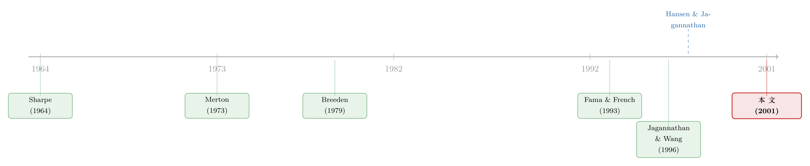

一把丈量所有定价模型的尺子——HJ 距离，与它照出的『过得了今天、过不了明天』
本文读的是 Hodrick & Zhang (2001, Journal of Financial Economics)：他们用 Hansen-Jagannathan 距离这一把「公用的尺子」，把 CAPM 之后冒出来的一众资产定价模型放到同一组资产（25 个 Fama-French 组合 + 国库券）上重新称重。结论有点扫兴——能「不被拒绝」的只有 Campbell (1996) 一个模型，但它的参数撑不过商业周期的稳定性检验；而一旦把收益率用期限利差「放大」一下，所有模型无一例外地定价失败。
1 一个让人头疼的局面
先说一个所有做实证资产定价的人都心知肚明、却很少摆到台面上的尴尬。
1970、1980 年代，金融经济学家围着 Sharpe (1964) 和 Lintner (1965) 的资本资产定价模型 (capital asset pricing model, CAPM) 转。CAPM 的预言干净得近乎傲慢：一个资产的预期超额收益，等于它和市场组合的协方差乘以一个市场风险价格；换种说法，就是这个资产的 beta 乘以市场的预期超额收益。
可惜数据不买账。一个又一个 CAPM 解释不了的「异象 (anomaly)」被翻了出来——规模、账面市值比、动量……。Roll (1977) 干脆釜底抽薪，说 CAPM 根本不可检验，因为你永远不知道真正的「市场组合」是什么，任何一次检验都是模型和市场组合代理的联合假设。
但企业要算资本成本、投资者要算预期收益，这门生意不能停。于是 CAPM 的「继任者」们一个接一个登场：Merton (1973) 的跨期 CAPM、Breeden (1979) 的消费 CAPM (consumption CAPM, CCAPM)、Campbell (1993, 1996) 的动态模型、Jagannathan & Wang (1996) 的条件 CAPM、Cochrane (1996) 的生产性模型、Fama & French (1993) 的三因子模型……
问题来了。这些模型各自在不同的数据集上、用不同的统计方法被「验证」过，每一篇文章都说自己「显著改善了 CAPM」。可一个想知道「到底该用哪个」的人，面对这一屋子互相不照面的模型，几乎无从下手。你没法把 A 文章里的卡方统计量和 B 文章里的拟合优度摆在一起比——它们量的根本不是同一把尺子。
这就是本文要解决的事：把这些模型拉到同一组资产、同一套方法论下，公平地称一次重。
2 一把谁都能上的秤：HJ 距离
要做横向比较，第一步是找一把对所有模型都「一视同仁」的尺子。本文用的是 Hansen & Jagannathan (1997) 的距离度量，下称 HJ 距离 (HJ-distance)。
它的思路其实非常物理。无套利意味着存在一组随机贴现因子 (stochastic discount factor, SDF) m，能给所有资产正确定价：
$$ E_t(m_{t+1} R_{j,t+1}) = p_j, \quad \forall j $$
R 是组合 j 的收益，p 是它当期的价格——如果 R 是毛收益，p=1；如果是超额收益，p=0。对总收益取期望、用迭代期望律，就得到本文真正用来估计的无条件版本 E(m R) = p。
任何一个资产定价模型，本质上都是在给你一个「贴现因子的代理 (proxy)」y。本文考虑的都是线性模型，即 y 是常数和一组因子 f 的线性函数：
$$ y_{t+1} = b'F_{t+1} = b_0 + b_1' f_{t+1} $$
这里 F = [1, f']'。如果模型是对的，y 就落在那组真贴现因子的集合 M 里；如果模型是错的，y 离 M 就有一段正的距离。 这段距离，就是 HJ 距离：
$$ d = \min_{m \in M} \| y - m \|, \quad \text{where } E(mR) = p $$
接着，一个自然的问题是：这段距离怎么算？Hansen & Jagannathan 把它写成一个拉格朗日极小化问题：
$$ d^2 = \min_{m} \sup_{\lambda} \left\{ E(y-m)^2 + 2\lambda'[E(mR) - p] \right\} $$
解出来，那个「最接近 y 的真贴现因子」m* 满足 y - m* = \lambda^{*\prime} R，其中
$$ \lambda^* = E(RR')^{-1} E(yR - p) $$
代回去，就得到本文的主角公式——HJ 距离的封闭解：
为什么这把尺子能公平地横向比较？关键就在中间那个权重矩阵 E(RR')^{-1}。它只跟你要定价的那组资产有关，跟具体哪个模型无关。这一点恰恰是它和「最优 GMM」最大的不同——后者的权重矩阵 W^* = S^{-1} 会随模型而变（每个模型的定价误差方差结构不同），于是不同模型的卡方统计量根本不在一个量纲上，没法比。Hansen (1982) 的最优 GMM 估计量方差最小、检验最有力，本文也照样报了；但要做「选秀」，HJ 距离才是那张公平的考卷。
HJ 距离不仅是一个抽象的「距离」。Hansen & Jagannathan 证明，它等于在这组资产上能构造出的最大定价误差；而当模型里含常数项（于是无风险利率被正确定价）时，d 除以贴现因子均值，就是模型预测的夏普比率与真实夏普比率之间的最大缺口。Campbell & Cochrane (2000) 进一步把它乘上一个 20% 的年化标准差，翻译成「这个错误的模型，在预期收益上最多能错多少个百分点」。换句话说，HJ 距离是一个有业务含义的数字，不是纯数学游戏。（关于 SDF 框架本身，可参见《贴现率：资产定价的中心议题》。）
参数怎么估？把样本定价误差写成 g_T(b) = (1/T)\sum_t R_t y_t - p，HJ 距离的估计就是一个标准 GMM 问题：
$$ \hat{b} = \arg\min\; g_T(b)' W_T\, g_T(b) $$
线性模型有解析解，\hat{b} = (D_T' W_T D_T)^{-1}(D_T' W_T p)。然后用 Jagannathan & Wang (1996) 的定理三，构造「HJ 距离是否等于零」的检验统计量。到这里，一切看起来都很顺：把六个模型的 d 算出来，谁最小谁赢。
但真正关键的一步，恰恰不在这里。
3 关键的一步：让价格随商业周期「呼吸」
如果故事到上一节就结束，那这篇文章只是一次「模型选秀」，不会留下太多东西。它真正有分量的地方，在于对「无条件检验」的两点不满，以及由此引出的两道额外关卡。
第一点不满是：上面那套全是无条件的实证。可大量证据表明，预期收益是随时间变化的——风险的价格在繁荣和萧条里不一样。一个把风险价格钉死成常数的模型，先天就有偏。
于是本文允许模型参数随商业周期「呼吸」。做法是把 b 里的某个参数写成一个周期变量 z_t 的函数：
$$ y_{t+1} = b(z_t)' F_{t+1} = b_{0,1} + b_{0,2} z_t + b_{1,1}' f_{t+1} + b_{1,2}'(f_{t+1} z_t) $$
最后一个等号点破了 Cochrane (1996) 的一个洞见：给因子的价格做缩放，等价于给因子本身做缩放（多出一个 f \times z 的交叉项）。 这就是所谓的「scaled factors」。本文用三种 z：月度模型用工业生产 (industrial production, IP) 的 HP 滤波周期项，季度模型用真实 GNP 的周期项、或 Lettau & Ludvigson (2001a) 的消费—财富比 (CAY)，外加一个一月份虚拟变量 (January dummy)——因为 Loughran (1997)、Daniel & Titman (1997) 都指出账面市值比效应主要是个一月效应。
（把风险价格交给商业周期去调、再看动量与价值会不会被「收编」，这条路后来被走得很深，可参见《会「看天」的 beta》；而条件 CAPM 让 beta 随时间变动的思路，正是 Jagannathan-Wang 的看家本事，见《时变的 beta，被低估了二十年的风险》。）
第二点不满更狠，也是本文的灵魂：「HJ 距离等于零」这道关，太好过了。
为什么？因为条件模型是有代价的。如果你选对了周期变量，它确实能抓住风险溢价的动态、跑赢无条件模型；可如果你选错了，这个被错误设定的模型仍然可能在小样本里表现得很好——它白白多用了几个自由度去拟合样本。Ghysels (1998) 早就警告过：用条件变量去「改进」模型，可能反而让它的样本外表现更糟，因为参数根本不稳定。
于是反转出现了。本文给每个「过了关」的模型，又加了两道它们未必过得去的关卡。
关卡一：参数稳不稳？ 如果模型设定正确，参数就该是稳定的。本文用 Andrews (1993) 的 supLM 检验——原假设是「参数没有结构性断点」，在样本 20% 到 80% 之间每隔 5% 找一个候选断点，取最大的 LM 统计量。一个模型即便 HJ 距离为零，只要参数会在某个未知时点突变，它就过不了这一关，也注定样本外预测不准。
关卡二：换一组资产还成立吗？ 这是 Cochrane (1996) 的另一个洞见。条件信息可以用来「缩放」收益率：把 E(m R) = p 两边同乘一个时点 t 信息集里的变量 x，由迭代期望律得到
$$ E(m_{t+1} R_{j,t+1} x_t) = E(x_t p_j) $$
这些 R x 可以理解成「管理型组合」的收益——组合经理根据他观察到的信号 x 调整权重。如果模型是对的（参数不随资产变），那它既然能给原始收益 R 定价，就该同样能给缩放收益 Rx 定价。 本文用来缩放的那个变量，是长短期国债收益率之差，即期限利差 (term spread)。
至此，三道关卡齐备：HJ 距离为零（必要的入场券）、参数稳定（撑得过周期）、给缩放收益也能定价（换组资产不塌）。要价的资产是 Fama-French 的 25 个规模 × 账面市值比组合的超额收益，外加国库券毛收益，共 26 个；样本期月度 1952:01–1997:12（552 期）、季度 1953:01–1997:04（180 期，从 1953 开始是因为 CAY 数据所限）。
4 结果：一场没有真正赢家的选秀
现在来看这场选秀的成绩单。
第一关，HJ 距离等于零。 大多数模型都被拒绝了。唯一能让人「无法拒绝正确定价」的，是 Campbell (1996) 的动态模型——在这个模型里，任何能预测市场收益的变量都摇身变成资产收益的风险因子。看起来，Campbell 模型赢了。
但这场胜利非常空洞。
第二关，参数稳定性。 supLM 检验给 Campbell 模型泼了冷水：它的参数未必稳定。也就是说，Campbell 模型之所以能在样本内「不被拒绝」，很可能恰恰是因为它借助额外的自由度去贴合了一段特定时期的数据——这正是 Ghysels (1998) 担心的那种「样本内漂亮、样本外露馅」。一个参数会突变的模型，无论它的 d 多小，都谈不上是「正确设定」。
第三关，缩放收益。 这是最干脆利落、也最具杀伤力的一击：当收益率被期限利差缩放之后，所有模型——无一例外——都无法正确定价。 没有任何一个候选模型扛得住「换一组（管理型）资产」的考验。
把三关连起来读，本文真正想说的那句话才浮出水面：
「通过 HJ 距离等于零」是一道必要而远非充分的关卡。 一个被错误设定的模型，完全可能因为参数不稳定而在样本内蒙混过关，却在样本外、或换一组资产时原形毕露。判断一个模型好不好，不能只看它在一组资产、一段样本里的拟合，而要看它撑不撑得过商业周期、换不换得了资产。
这，就是这篇文章反复要把读者带到的那个核心：别被一次漂亮的样本内检验骗了。
5 文献脉络
把这篇文章放回它所在的那条河里，脉络其实很清晰。
源头是 Sharpe (1964) 和 Lintner (1965) 的 CAPM——一个静态、单因子、风险价格恒定的世界。Merton (1973) 第一个指出 CAPM 是静态的，当投资机会集随时间变化时，收益与其它状态变量的协方差也该被定价，这就是跨期 CAPM 的种子。Breeden (1979) 把它推向消费侧，做出 CCAPM；Hansen & Singleton (1982) 用欧拉方程给了 CCAPM 一个离散时间的实证检验框架。

接着，CCAPM 的实证失败 + Merton 逻辑的理论吸引力，催生了 Campbell (1993, 1996) 的动态模型；Jagannathan & Wang (1996) 则沿着「条件 CAPM + 时变 beta」另辟一径；Cochrane (1996) 干脆从生产侧切入，把宏观投资变量当风险因子（这条路后来被逐年对账地重估过，见《一个「成功」的模型，为什么经不起逐年对账？》）；而 Fama & French (1992, 1993, 1995, 1996) 的三因子模型，则成了学界沿用至今的「主力工具」。
模型越来越多，可怎么公平地比较它们，反而成了悬案。Hansen & Jagannathan (1997) 提供了那把决定性的尺子——一个与模型无关的距离度量；Jagannathan & Wang (1996) 给了它配套的检验统计量；Ghysels (1998) 则敲响了「条件化可能帮倒忙」的警钟。本文站的位置，正是把这几件工具组装起来，对前面所有模型做一次统一的、带稳定性与稳健性双重审查的体检。（这条「给定价核做测谎」的方法论支线，也可参见《给资产定价模型测谎的那把尺，自己先量歪了》。）
6 评论与延伸（Q&A + 研究方向）
(a) 几个可能的疑问
Q：HJ 距离和最优 GMM 的 J 检验，到底差在哪？为什么不直接用更有效率的 J 检验？
差在权重矩阵。最优 GMM 用
W^* = S^{-1}，标准误最小、检验最有力，但S依赖具体模型，于是不同模型的卡方统计量量纲不同，没法横向比。HJ 距离的权重矩阵E(RR')^{-1}只取决于资产、对所有模型一致，才能做「选秀」。本文两者都报，而且发现两种非单位权重矩阵给出的推断差别不大；它们都拒绝用单位矩阵（即最小化平方定价误差），因为那会让标准误暴涨、检验失去意义。
Q：「无法拒绝 Campbell 模型」是不是就等于「Campbell 模型是对的」？
恰恰相反，这是本文最想纠正的误读。「无法拒绝」只是说样本内的定价误差在统计上不显著，是一张入场券，不是合格证。Campbell 模型随即在参数稳定性检验上栽了跟头，又在缩放收益上全军覆没。本文的潜台词是：单凭一次样本内检验给模型发奖状，是危险的。
Q：为什么偏偏用「期限利差」去缩放收益，而不是别的变量？
因为资产定价讲的是条件期望，任何在投资者时点
t信息集里的变量都能用来缩放收益、生成一组新的「管理型组合」。期限利差是公认的、被广泛记录的预测市场收益的变量，自然是个合格的工具。用它缩放，相当于换了一组资产去考模型——而所有模型都没考过。
Q：参数不稳定，会不会只是 supLM 检验「太敏感」，把正常的抽样波动误判成断点？
这是一个合理的担心。Andrews (1993) 的 supLM 是针对「单个未知时点的结构性断点」设计的，作者也承认这未必是最有意思的备择假设，但它提供了一个合理的参数稳定性检验。更稳妥的读法是：稳定性检验是三道关卡之一，它的信号要和「缩放收益全败」放在一起看——后者几乎不依赖稳定性检验的具体设定，结论已经足够强。
Q：只用 25 个规模/账面市值比组合 + 国库券，会不会「考题」本身就偏向某类模型？
Fama-French 这 25 个组合是出了名地难定价，因为它们同时嵌入了规模溢价和价值溢价，恰恰是检验模型的「硬骨头」。当然，正因为它们是按规模和 B/M 排序构造的，对以这些特征为因子的 Fama-French 模型可能「友好」一些——但结果显示三因子模型同样过不了缩放收益这关，所以这个担心在本文语境里反而被缓解了。
Q：这篇 2001 年的结论，放到今天的「因子动物园」时代还成立吗？
方法论的内核完全成立，甚至更重要了。今天有几百个因子，「样本内拟合漂亮」的诱惑只增不减。本文的教训——必要性≠充分性、要查稳定性与对条件信息的稳健性——正是后来「样本外检验」「shrinkage」「因子动物园治理」等一整条文献的先声。
(b) 几个可能的研究问题与提案
1. 把这套三关卡体检搬到公司债定价模型上。 【经济故事】公司债收益的因子模型（信用、流动性、期限、下行风险等）这些年层出不穷，但绝大多数只报样本内拟合，几乎没人系统检验「参数稳不稳」和「给缩放收益能不能定价」。信用市场的风险价格高度顺周期，正是参数不稳定的重灾区。 【可行性】高。数据用 TRACE + 公司债因子，HJ 距离与 supLM 都是现成工具，缩放变量可用信用利差或期限利差。识别上的难点是公司债收益的非正态与流动性噪声，需要对权重矩阵的稳健性多做几手。
2. 用外资持有人结构作为「缩放变量」，检验国际资产定价模型。 【经济故事】本文用宏观周期变量缩放；一个自然的延伸是用「谁在持有」来缩放。如果一个模型给某资产定价正确，它在外资持有占比高/低的子样本里都该成立。外资流动本身顺周期，能给「条件风险价格」提供一个有经济含义的工具。 【可行性】中。需要跨国持仓数据（如 FactSet/EPFR 或各国托管数据）和可投资度指标；识别的关键是外资份额的内生性，可借鉴可投资度放开的准自然实验来构造外生变化。
3. 把「缩放收益全败」翻译成可交易的成本。 【经济故事】本文证明模型给管理型组合定价失败，但没说这个失败「值多少钱」。沿 Campbell & Cochrane (2000) 的思路，可以把每个模型在缩放收益上的最大夏普缺口，年化成一个具体的、投资者能感知的预期收益误差。 【可行性】高。纯方法论延伸，数据需求和本文一致，主要工作量在把 HJ 距离的「最大错误定价夏普比率」逐模型、逐缩放变量地系统报告出来。
4. 用机器学习构造「最难定价」的缩放组合，做对抗性检验。 【经济故事】期限利差只是一个手工选的缩放变量。能不能让算法在投资者信息集里搜出「最能暴露模型设定错误」的那个缩放方向？这相当于给模型出一道「最难的考题」。 【可行性】中。技术上可行（在 SDF 的矩条件上做对抗式优化），但要小心过拟合与数据窥探——需要严格的样本外与多重检验校正，否则会把噪声当成模型失败。
7 我的判断
这篇文章的贡献，与其说是「发现了哪个模型更好」，不如说是立了一个规矩：评价资产定价模型，不能停在一组资产、一段样本的样本内拟合上。它把三件原本散落的工具——Hansen-Jagannathan 的公用尺子、Jagannathan-Wang 的检验、Andrews 的稳定性检验，再加上 Cochrane 的缩放收益思想——拼成了一套可重复的体检流程，并且诚实地得出了一个不讨喜的结论：候选模型们要么过不了稳定性这关，要么在缩放收益上集体失败。这种「把好消息一路追问到坏消息」的克制，正是它经得住时间的原因。
对识别的担忧有两点。其一，supLM 稳定性检验依赖「单一未知断点」这个相当特定的备择，若真实的不稳定是渐变或多次小幅漂移，它的功效未必可靠——好在主结论更多压在「缩放收益全败」上，这一击对稳定性检验的设定几乎不敏感。其二，缩放变量的选择有一定任意性：只用期限利差固然干净，但「换一个缩放变量会不会有模型能过关」这个问题，本文并未穷尽——这恰恰给上面第 4 个研究提案留了空间。
后续我最想看到的，是把这套体检从股票搬到公司债与信用市场。那里因子模型同样泛滥、风险价格更顺周期、参数更可能突变，却几乎没有人做过「稳定性 + 缩放收益」的双重审查。如果能在那片更崎岖的地形上重做一遍 Hodrick-Zhang，很可能会照出比股票市场更刺眼的「过得了今天、过不了明天」。
参考文献
- Andrews, D. (1993). Tests for parameter instability and structural change with unknown change point. Econometrica 61, 821–856.
- Breeden, D. (1979). An intertemporal asset pricing model with stochastic consumption and investment opportunities. Journal of Financial Economics 7, 265–296.
- Campbell, J. (1993). Intertemporal asset pricing without consumption data. American Economic Review 83, 487–512.
- Campbell, J. (1996). Understanding risk and return. Journal of Political Economy 104, 298–345.
- Campbell, J., Cochrane, J. (2000). Explaining the poor performance of consumption-based asset pricing models. Journal of Finance 55, 2863–2878.
- Cochrane, J. (1996). A cross-sectional test of an investment-based asset pricing model. Journal of Political Economy 104, 572–621.
- Fama, E., French, K. (1993). Common risk factors in the returns on stocks and bonds. Journal of Financial Economics 33, 3–56.
- Ghysels, E. (1998). On stable factor structure in the pricing of risk: Do time-varying betas help or hurt? Journal of Finance 53, 549–573.
- Hansen, L. (1982). Large sample properties of generalized method of moments estimators. Econometrica 50, 1029–1054.
- Hansen, L., Jagannathan, R. (1997). Assessing specification errors in stochastic discount factor models. Journal of Finance 52, 557–590.
- Jagannathan, R., Wang, Z. (1996). The conditional CAPM and the cross-section of expected returns. Journal of Finance 51, 3–53.
- Lettau, M., Ludvigson, S. (2001a). Consumption, aggregate wealth and expected stock returns. Journal of Finance 56, 815–849.
- Merton, R. (1973). An intertemporal capital asset pricing model. Econometrica 41, 867–887.
- Roll, R. (1977). A critique of the asset pricing theory's tests: Part I. Journal of Financial Economics 4, 129–176.
- Sharpe, W. (1964). Capital asset prices: A theory of market equilibrium under conditions of risk. Journal of Finance 19, 425–442.